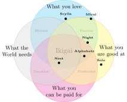

Abschlussprojekt
Zurück zur Fab Academy 2024. Fran Sanchez
Die Ideen
Warum sollte ich über ein neues Projekt nachdenken, wenn ich schon mehrere halbfertig habe? Lasst mich die Kandidaten vorstellen… (es wird besser, wenn ihr es mit epischer Hintergrundmusik lest →)
Alphabets
→ Repository
Alphabets ist ein modulares mechanisches Display zur Anzeige interaktiver Nachrichten. Ein Projekt, das ich 2014 begonnen und seither mehrfach wieder aufgegriffen und zur Seite gelegt habe. Kommerziell gesehen ist es ein gutes Produkt. Es war so erfolgreich, dass manche Leute mich baten, ihnen 800 bis 1000 Einheiten zu senden.

Night
→ Repository
Day & Night sind die Namen zweierWarum zwei? Ein weiteres der vielen gebrochenen Versprechen.
automatisierter Dobson-Newton-Reflektorteleskope für die Verfolgung von Himmelskörpern, die Erfassung und Stapelung von Bildern. Sie sind identisch, außer dass einer weiß und der andere schwarz ist. Licht und Dunkelheit, Tag und Nacht.

Solo
→ Repository
Solo ist der Name eines Zubehörs für SLR-Kameras, das die Aufnahme von persönlichen Videos durch Automatisierung der Fokussierung und einiger Kamerabewegungen erleichtert. Das einzige, was zwischen Erfolg und mir steht, ist meine Faulheit.

Mirai 未来
→ Repository
Mirai ist ein tragbarer Mikrocomputer im Retro-Cyberdeck-Stil mit mechanischer Tastatur. Er zielt darauf ab, die Nostalgie für analoge Geräte und das Design der 80er Jahre durch digitale Fertigung wiederzubeleben. Die Vorstellung eines modularen Computers hat mich immer angezogen. Warum müssen wir den ganzen Computer ersetzen, wenn wir nur einen neuen Prozessor oder mehr Speicher wollen?

Scylla Σκύλλα
→ Repository
Scylla istScylla war eine Kreatur der griechischen Mythologie, die Schiffe in der Straße von Messina plagte.
ein Hydrofoil mit Turbine, entworfen für Freizeitaktivitäten in Meeren oder Seen. Nach der katastrophalen zweiten Woche hat dieses Projekt einen ernsten Ausblick mit negativer Perspektive.

Nest
→ Repository
Nest ist kein Wohnhaus, aber man kann darin leben. Es ist ein Lebenserhaltungsmodul für den temporären Gebrauch, portabel und für den Einzelpersonenmarkt gedachtGelegentlich zwei ;-)
. Ich habe an diesem Projekt theoretisch während meines Aufenthaltes am MIT Entrepreneurship Bootcamp gearbeitet und es erhielt sehr positive Rückmeldungen. Ich würde es gerne wieder aufgreifen und einen Prototyp bauen, auch wenn er nicht voll funktionsfähig ist (ich denke, das ist ein Projekt, das man in der Gruppe angehen sollte).

Die Entscheidung
Vergleichstabelle
| Nest | Mirai | Scylla | Alphabets | Solo | Night | |
|---|---|---|---|---|---|---|
| Wochen^\dagger | 16 | 4 | 8 | 4 | 2 | 6 |
| Schwierigkeitsgrad | 4/5^\dagger^\dagger | 2/5 | 4/5 | 2/5 | 2/5 | 3/5 |
| Vielseitigkeit | 5/5 | 1/5 | 1/5 | 4/5 | 2/5 | 2/5 |
| Kosten | 1k | 0.5k | 1k | 0.1k | 0.1k | 0.5k |
| Portabilität | Gering | Hoch | Mittel | Hoch | Hoch | Mittel |
^\dagger^\dagger Könnte aufgrund von sanitären Installationen auf 5/5 steigen
Ikigai Venn-Diagramm

Das Urteil
Eigentlich sollte ich mich jetzt für eines entscheiden. Aber das werde ich nicht. Stattdessen werde ich mit allen Projekten, die ich am Laufen habe, voranschreiten. Um sie gleichzeitig zu managen, werde ich mich in kleinen Spiralen bewegen. Einige werden auf der Strecke bleiben und nur eines wird sich als endgültiges Projekt durchsetzen.

Jedes Projekt ist in seinem eigenen Repository untergebracht. Diese Seite wird den Fortschritt jedes einzelnen von ihnen wie ein Tagebuch verfolgen.